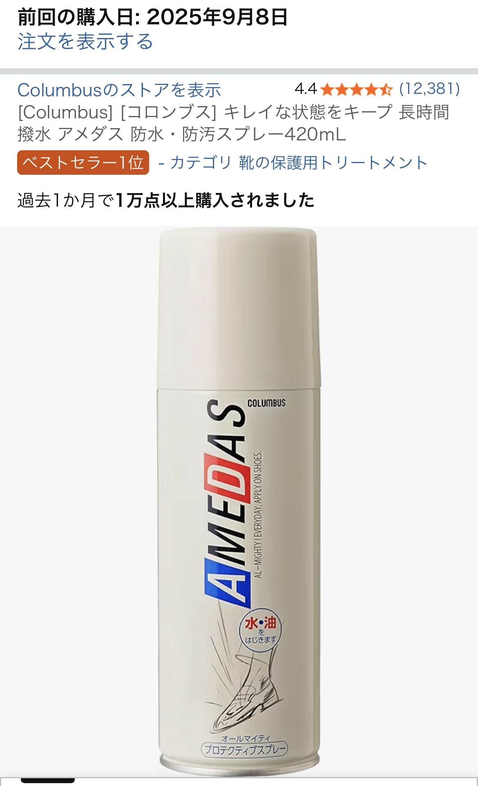

アメダス防水スプレーを口コミから徹底レビュー｜迷ったらこれ1本でOKな定番ケア用品
「迷ったらアメダスを買っておけば間違いない」――そんな評価を受けている定番の防水スプレー、アメダス。12,000件以上のレビューが付いているのも納得の、バランスの良さが光る1本です。

アメダスが「定番」と言われる理由
アメダスが長年支持されている理由は、防水・防汚効果と素材への優しさのバランスにあります。しっかり水を弾きつつ、革やスエード、布地など幅広い素材に使えるため、「とりあえずこれを1本持っておけば大体の靴とバッグはカバーできる」という安心感があります。
口コミでも「雨の日でもお気に入りの革靴を気兼ねなく履けるようになった」「白スニーカーの汚れが付きにくくなった」といった声が多く、日常使いの“保険”として常備している人が多い印象です。
防水・防汚効果はどのくらい続く？
一般的な使用感としては、通勤・通学レベルの使用で2〜3週間程度は効果を実感しやすいと言われます。特に新品の靴や、クリーニング後のバッグに吹きかけておくと、雨だけでなく泥はねや黒ずみ汚れも付きにくくなり、結果的に買い替えサイクルを伸ばすことにつながります。
「防水スプレーを使うと素材が硬くなりそう」と心配される方もいますが、アメダスは仕上がりの自然さも高評価。テカリが出たり、色が極端に変わったりしにくく、革の質感を損ねたくない人にも選ばれています。
素材への優しさと使えるアイテムの幅
アメダスは、スムースレザー、スエード、ヌバック、布地など、ファッションでよく使われる素材の多くに対応しています。革靴、スニーカー、ブーツ、ビジネスバッグ、トートバッグ、リュックなど、クローゼットの中の主要アイテムをほぼ一括でケアできるのが大きなメリットです。
特に、白スニーカーや淡色バッグは汚れが目立ちやすく、少しの雨や汚れで一気にくたびれて見えてしまいます。購入直後にアメダスを吹きかけておくだけで、「汚れたらどうしよう」という不安が減り、雨の日でもお気に入りを気軽にコーデに取り入れやすくなるのは、ファッション好きにとって大きな心理的メリットです。
失敗しないアメダスの使い方と注意点
効果を最大限に引き出すには、「距離」「量」「乾燥時間」の3つがポイントです。
- 距離：靴やバッグから20〜30cmほど離して、全体にムラなくスプレーする
- 量：表面がうっすら濡れたかな、という程度で止める（かけすぎない）
- 乾燥時間：最低でも30分以上、可能なら1時間ほどしっかり乾かす
また、防水スプレー全般に言えることですが、屋外または十分に換気された場所で使用することは必須です。吸い込まないように注意しつつ、子どもやペットの近くでは使わないようにしましょう。
こんな人はアメダスを選んでおけば間違いない
口コミと一般的な評価を踏まえると、次のような人にはアメダスが特におすすめです。
- 靴やバッグを長く大事に使いたい人（買い替え頻度を減らしたい）
- 雨の日でも革靴や白スニーカーを履きたい人
- 1本でいろいろな素材に使える防水スプレーが欲しい人
- 仕上がりがテカテカせず、自然な風合いを保ちたい人
「迷ったらアメダスを買っておけば間違いない」という総評どおり、初めて防水スプレーを買う人の“最初の1本”として非常に優秀です。靴箱やクローゼットに1本常備しておくだけで、雨の日のストレスがかなり減ります。
まとめ：アメダスは“ファッション投資”としてコスパの良い1本
アメダスは、防水・防汚効果、素材への優しさ、仕上がりの自然さのバランスが良く、靴やバッグを長持ちさせたい人に自信を持っておすすめできる定番アイテムです。価格自体は決して高くないのに、守ってくれるのは革靴、スニーカー、バッグなど、トータルで見るとかなりの金額になるファッションアイテムたち。
「お気に入りほど雨の日に出番が減る」という悩みを解消してくれる意味でも、アメダスはファッションへの小さな投資として十分に元が取れる1本だと感じます。まだ防水スプレーを持っていない方、以前使っていたけれど切らしてしまっている方は、このタイミングで1本常備しておくと、次の雨の日からすぐに違いを実感できるはずです。